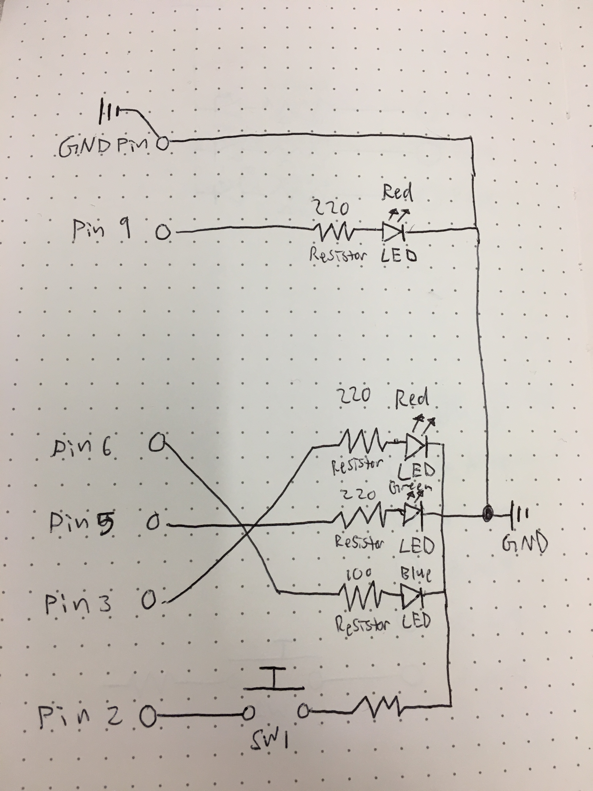
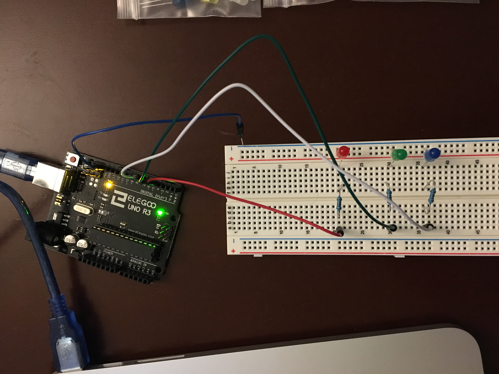

Garrett's Assignment 2 - Lights that Fade!
Schematic
Fill in schematic descrip
Circuit
The circuit repeats a fading red LED. When the button is pushed, the red LED will turn off and the RGB LED will turn on with red, green, and blue color values.
Firmware
The general logic of this code initializes a timer to each specific pin and LED to blink on and off.
/*
Garrett Mar
HCDE 439
Assignment two - Lights that Fade!
1/21/19
Adapted from Arduino Fade Tutorial:
http://www.arduino.cc/en/Tutorial/Fade
*/
// The number of the pushbutton pin
const int buttonPin = 2;
// The pin the LED is attached to
int led = 9;
// variable for reading the pushbutton status
int buttonState = 0;
// Red pin associated to part of RBG LED
int rled = 3;
// Green pin associated to part of RBG LED
int gled = 5;
// Blue pin associated to part of RBG LED
int bled = 6;
// the setup routine runs once when you press reset:
void setup() {
// declare pin 9 to be an output:
pinMode(led, OUTPUT);
// declare button to be an input:
pinMode(buttonPin, INPUT);
}
// the loop routine runs over and over again forever:
void loop() {
// read the state of the pushbutton value:
buttonState = digitalRead(buttonPin);
// If button is not pressed, turn off RBG LED and fade red LED
if (buttonState == HIGH) {
// Turn off red pin associated to RGB LED
digitalWrite(rled, LOW);
// Turn off green pin associated to RGB LED
digitalWrite(gled, LOW);
// Turn off blue pin associated to RGB LED
digitalWrite(bled, LOW);
// Fade in from min to max in increments of 5 points:
for (int fadeValue = 0 ; fadeValue <= 255; fadeValue += 5) {
// sets the value (range from 0 to 255):
analogWrite(led, fadeValue);
// wait for 30 milliseconds to see the dimming effect
delay(30);
}
}
// If button is pressed, turn on three different color values of RBG LED and turn off red LED
else {
// Turn off red LED
digitalWrite(led, LOW);
// Set red value of RBH LED to 100
analogWrite(rled, 100);
// Set green value of RBH LED to 50
analogWrite(gled, 50);
// Set blue value of RBH LED to 20
analogWrite(bled, 20);
}
}
Operating Circuit
Here is an animated GIF of everything in action! It simulates a red light fading and if the button is pressed, the red light will turn off and the RBG light will turn on.